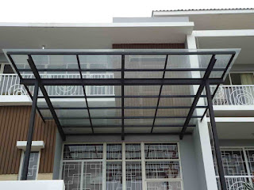
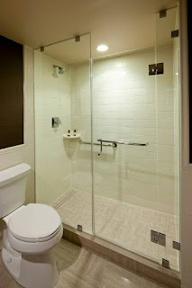
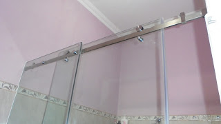

Kian berkembangnya dunia pembangunan, karenanya hadir banyak material penambah yang melengkapi estetika sebuah banguanan. Kaca kian melengkapi bangunan agar tampak lebih menawan dan mempunyai skor keindahan bila di pandang orang. Berikut sedikit penjelasan yang dapat anda baca mengenai sebagai acuan and ajika akan membangun rumah ataupun daerah usaha.
Jenis-ragam kaca diantara lain kaca tempered, kaca shower, railing kaca, kanopi kaca dan masih banyak lagi. Tak cuma material kaca kini juga terdapat material kayu atau parket lantai kayu jati.
Distributor & Supplier Pintu Kaca di Surakarta
Kini sudah hadir ratusan pintu kaca Surakarta dengan desain yang berbeda-beda yang bisa di buat dan di pesan, entah itu pintu kaca Surakarta frameless (tanpa bingkai) atau pintu kaca Surakarta dengan frame. Ada banyak desain pintu kaca Surakarta yang dapat kita temui seperti pintu kaca Surakarta berbentuk sliding (geser) atau folding (lipat). Tak Anda menyenangi dengan pintu kaca Surakarta dengan bingkai, Anda dapat pilih apakah pigura tersebut terbuat dari bahan kayu atau alumunium. Tidak Anda mau memiliki pintu kaca Surakarta lipat yang terdiri dari sebagian bingkai. Kini tidak kalah penting lagi yakni pemilihan kaca.
Dis.or.id memiliki energi yang telah betul-betul profesional di bidang ini. Untuk budget yang lebih sedikit, Anda bisa memilih jenis kaca non-tempered.
Info Pemesanan Selengkapnya
Google Maps: https://www.google.com/maps/d/u/0/viewer?mid=1Oev1fV01o8gQSuJ72jMMShl0CllevHqY&ll=-7.27380280025364%2C112.65243155000007&z=18
Event: https://www.facebook.com/events/174522916469442/
Portfolio Produk: https://www.facebook.com/1681607345472479/photos/?tab=album&album_id=1712632585703288
Jasa Pemasangan Railing Kaca
Railing kaca bisa membikin rumah Anda demikian itu terlihat minimalis. Anda tidak hanya ditawarkan dengan model atau desain railing kaca yang sama. Lupakan bahan seperti kayu. Anda dapat melaksanakan eksplorasi dengan menggunakan bahan berupa kaca ketika mau mempunyai rumah dengan desain minimalis. Dan kaca ini bisa Anda gunakan sebagai bahan untuk membuat kaca railing. Maka dari itu, para produsen berusaha untuk menjadikan railing yang terbuat dari kaca dengan figur yang berbeda-beda. Tak kaca ini pecah, pecahannya halus sehingga tidak akan melukai orang.
Dalam hal ini, ada banyak tipe kaca yang dapat digunakan untuk membikin railing ini. Ini ragam kaca yang betul-betul kuat. Dikatakan benar-benar aman lantaran kaca tempered tidak menimbulkan pecahan yang runcing saat tiba-tiba kaca pecah entah itu dampak kecelakaan atau musibah seperti gempa. Pecahannya amat kecil dan lembut sehingga tidak akan melukai siapapun yang terkena pecahan. Sekarang pasti, dengan railing ini, Anda tidak hanya membikin tangga dan balkon lebih aman, tapi juga untuk memperindah tampilan interior rumah Anda.
Bagi anda yang sedang mencari railing kaca dengan kwalitas terbaik, anda dapat seketika kunjungi dis.or.id. Tentu dengan harga yang murah melainkan tetap berkelas.
Distributor, Supplier & Jasa Pasang Kanopi Kaca

Dan sensasi mandi menjadi lebih asik untuk dirasakan. Jadi sudah tidak heran lagi seluruh orang ingin mencari harga yang betul-betul kompetitif untuk menyesuaikan budget atau anggaran mereka masing – masing untuk membuat produk canopy kaca. Disinilah letak perbedaan optis yang utama antara akrilik (acrylic) dengan kaca. Kalau tembus pandang, kaca mengabsorpsi cahaya yang masuk sehingga semakin tebal kaca maka semakin sedikit cahaya yang dapat melaluinya, karenanya sifat transparannya makin berkurang.|Di samping pintu kaca shower akan membuat kamar mandi kecil nampak lebih besar. Pada atap akrilik, perembesan sinar yang terjadi demikian kecil sehingga meski ketebalannya bertambah, sifat transparannya tak banyak berubah.
Tak anda tertarik untuk memasang kaca kanopi pada rumah, gedung maupun kantor, anda bisa lantas mengunjungi dis.or.id. Terdapat banyak kanopi dengan berjenis-jenis ukuran dan ketebalan yang dapat anda pilih pantas dengan yang anda butuhkan. Anda juga dapat memenfaatkan jasa pemasangan atap kanopi kaca dengan seluruh tipe kaca yang anda butuhkan yang cocok dengan kriteria atap kanopi. Seandainya fungsi utama kanopi sebagai pelindung untuk bangunan tersebut, pemasangan kanopi kaca juga bisa membuat bangunan menjadi kelihatan lebih indah dan menarik, apalagi mengaplikasikan konsep yang sama dengan konsep rumah minimalis. Tidak anda sedang mencari kanopi kaca, anda dapat seketika mengunjungi dis.or.id.
Distributor & Supplier Kaca Shower

Penyekat ini akan memisahkan antara daerah berair yang diaplikasikan untuk mandi atau meletakan shower dan daerah lain yang merupakan zona kering. Tak berkeinginan lebih sempurna lagi, kamar mandi yang memakai shower ini dapat dilengkapi dengan bagian lain ialah shower screen atau bisa disebut dengan kaca shower. Jika pemasangannya juga betul-betul mudah dijalankan dan tidak membutuhkan waktu yang lama. Kelebihan shower screen dibanding dengan sistem penyekatan yang lain yaitu dihasilkan dalam format yang telah jadi dan tinggal dipasang saja.
Tak anda sedang memerlukan kaca shower, hal yang perlu anda lakukan yaitu mengunjungi dis.or.id. Disana tersedi kaca shower dengan bermacam-macam ukuran dan juga harga yang juga cukup relatif murah. Harga yang ditawarkan pun tergolong sangat murah. Anda dapat buktikan sendiri.
Distributor, Supplier & Jasa Pasang Kanopi Kaca
Banyak jenis kaca kanopi yang diaplikasikan sebagai atap, tidak cuma satu variasi saja. Kalau akan memberikan kesan lapang saat berada di kamar mandi, mandi dengan shower akan memberikan kesejukan tersendiri dibanding kamar mandi dengan bak mandi. Dan sensasi mandi menjadi lebih asik untuk dirasakan. Ada sebagian alasan kenapa Pintu Kaca Shower banyak diterapkan salah satunya ialah kaca lebih nampak bersih dan rapi dan juga lebih mudah dalam perawatannya. Seandainya tembus pandang, kaca mengabsorpsi sinar yang masuk sehingga semakin tebal kaca karenanya semakin sedikit sinar yang bisa melewatinya, karenanya sifat transparannya makin berkurang.|Di samping pintu kaca shower akan membuat kamar mandi kecil terlihat lebih besar.
Sekarang anda dapat menerima kanopi kaca dengan kwalitas terbaik dan juga berkualitas di dis.or.id. Sesudah kaca untuk atap kanopi cukup digemari.
Jasa Maintenance Kaca
Umumnya ditahui banyak pemilik gedung kaca yang berharap merawat bangunan. Tidak kaca tidak kusam, karenanya kaca semestinya dibersihkan secara regular. Sekiranya itu, mampu membersihkan bangunan kaca melengkung.
Seandainya juga dengan warna dan wujud kaca.
Dis.or.id memahami kian banyak gedung pencakar langit dengan betuk yang berbeda-beda. Oleh sebab itu, dis.or.id hanya memilih orang-orang yang benar-benar profesional dan sudah mempunyai pengalaman dalam hal maintenance kaca. Dengan telah memberikan training terhadap tenaga spesialis sehingga mereka sudah bisa melakukan pekerjaan mereka dengan amat baik. Selain cuma dalam hal membersihkan kaca, mereka juga mampu menjalankan pembenaran serta penggantian kaca yang mengalami kerusakan.
Jasa Pemasangan Kaca Tempered

Jasa pemasangan kaca tempered menawarkan solusi bagi Anda memiliki budget yang terbatas melainkan berkeinginan memiliki properti, entah itu gedung perkantoran, toko, atau rumah hunian yang memakai kaca tempered. Selain cuma melakukan pemasangan kaca tempered untuk gedung perkantoran, tapi juga untuk rumah hunian. Untuk bagian perkantoran, pintu, partisi, serta balkon lazimnya terbuat dari kaca tempered. Kaca variasi Tempered memiliki energi 4-5 kali lebih baik dibandingkan kaca biasa dengan ketebalan yang sama. Kecuali sembarang tukang juga dapat melakukan pengerjaan pemotongan ini. Sekarang, kian banyak properti yang memakai kaca tempered.
Seandainya itu, beraneka bagian properti akan semakin menarik kalau dihasilkan dari kaca tempered seperti kanopi, pintu, kamar mandi, dan balkon.
Banyak hal yang dapat dilakukakn kaca tempered ini salah satunya sebagai pembatas, untuk kamar mandi dan masih banyak lagi. Tak saat ini anda sedang berharap membangun suatu bangunan atau gedung, anda dapat memanfaatkan kaca tempered untuk dipakai lantas ke segala ragam bidang. Jika aman kaca tempered juga mampu memberikan kesan keindahan yang benar-benar baik diperbandingkan dengan kata macam lainnya. Lebih dari itu, dis.or.id telah menyiapkan daya pakar yang siap untuk mengerjakan pemasangan, entah itu kaca tempered untuk kanopi, pintu, partisi, balkon, dan lain sebagainya.
Jual Kaca Cermin
Kaca cermin kini tak hanya dipakai sebagai aksesoris untuk perabotan seperti lemari rias. Lihat saja banyak produk cermin yang dihasilkan dengan desain unik dan menarik. Ada banyak sekali desain cermin yang dapat Anda pilih. Anda dapat tentukan desain seperti apa yang Anda inginkan. Sekarang, cermin tidak cuma berbentuk persegi atau persegi panjang saja. Jadi, cuma kelihatan transparan dari satu sisi saja. Malahan juga komponen tepi.
Tak hanya itu, harga yang di tawarkan sangatlah terjangkau dengan kwalitas dan juga kwalitas terbaik. Atau barangkali Anda menginginkan kaca cermin yang segera dapat direkatkan pada bagian furniture tertentu seperti pintu lemari. Tak figur lemari baju di mana komponen pintunya terbuat dari kaca cermin. Cermin ini umumnya ditempatkan di kamar mandi, di atas wastafel, atau di kamar tidur. Jadi, orang di luar tak bisa memandang Anda berada di dalam. Harga yang terjangkau dan kwalitas terbaik adalah ciri khas dari dis.or.id. Disana anda bisa mendapatkan kaca cermin yang layak dengan harapan anda.
Distributor & Supplier Pintu Lipat Kaca
Sekiranya ruang makan bersebelahan dengan taman, Anda dapat sekat dengan pintu lipat kaca ini. Kini pasti, modelnya banyak cocok dengan yang Anda butuhkan.
Banyak hal yang telah Anda ketahui seputar pintu kaca lipat tempered. Banyak pertimbangan yang membuat Anda pasti yakin untuk memilih kaca tempered ketimbang variasi kaca yang lainnya. Dan yang pasti, ruangan menjadi lebih modern, minimalis, dan nyaman untuk ditempati. Jadi, bukan hanya pintu saja yang berupa kaca, namun juga semua sekat ruangan.
Jasa Pemasangan Kubikel Toilet
Seandainya anda mengininkan kamar kecil yang layaknya mall maupun hotel, ada bagusnya anda memakai kubikel kamar mandi. Tetapi, seiiring berkembangnya desain interior, kamar mandi bahkan bisa di sekat dengan penyekat dari kaca.
Jikalau anda berminta untuk membeli kubikel kaca, anda bisa mengunjungi dis.or.id. Dengan memakai kamar kecil kubikel pada hunian ataupun gedung yang anda miliki tentunya banyak kelebihan yang anda daptkan adalah harga kubikel yang lebih murah diperbandingkan dengan bahan konvensionel lainnya. Sebab disana terdapat kubikel WC dengan bermacam ukuran serta ketebalan kaca.
Keuntungan dari sekat kaca memberikan adalah bisa memberikan efek luas sebab ruangan tersekat namun secara visual tidak.
Melainkan penggunaan kaca di kamar mandi dapat jadi problem saat Anda meletakkannya dengan salah. Justru embun dapat menempel di kaca dan lambat laun bisa membuat kaca tidak sejernih semula. Jikalau anda saat ini sedang memerlukan kaca shower untuk kamar mandi, segera saja kunjungi dis.or.id untuk melakukakn pengorderan ataupun menanyakan terperinci harga dari kaca shower. Kaca shower yang di jual di jamin kaca shower yang memiliki kwalits terbaik dan bermutu tinggi.
Distributor & Supplier Partisi Kaca
Partisi ini kini lagi digunakan di perkantoran, hotel, atau sentra perbelanjaan saja. Banyak rumah hunian yang sekatnya terbuat dari kaca. itu, prosesnya juga memakan waktu sehingga Anda bisa menghembat pemasangan. Alasan yang kedua, partisi kaca ini ruangan menonjol sangat minimalis. Ini dengan konsep atau desain properti ketika ini. Biaya pemasangan lebih murah membutuhkan waktu yang tidak lama untuk memasang partisi yang terbuat dari kaca tersebut. ruangan disekat dengan partisi ini seperti kamar mandi dalam dan taman dalam ruangan. Anda mengaplikasikan partisi kaca ini sebagai penyekat sebagian ruangan seperti kamar mandi dalam, taman dalam ruangan, ruangan bermain di dalam rumah, dan lain sebagainya. itu, tentukan juga macam kaca yang berkeinginan digunakan apakah transparan, semi transparan, atau kaca cermin yang ruangan privat. Partisi kaca dengan kualitas terbaik dan bisa anda peroleh di dis.or.id. Disana anda menerima partisi kaca dengan harga yang relatif murah. Disana anda akan mendapatkan partisi kaca yang layak dengan keinginan anda.